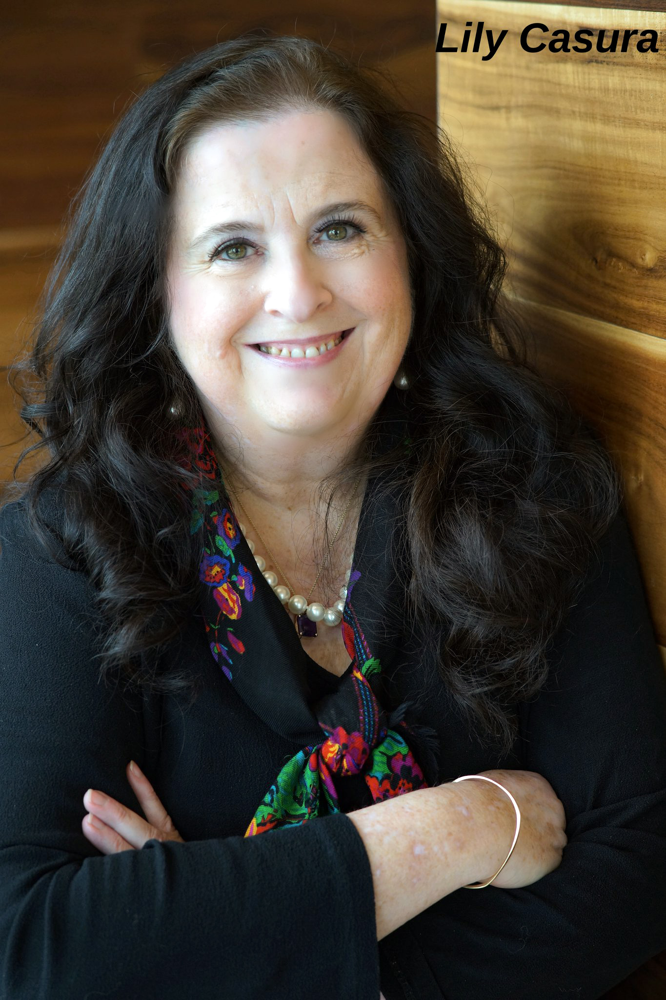
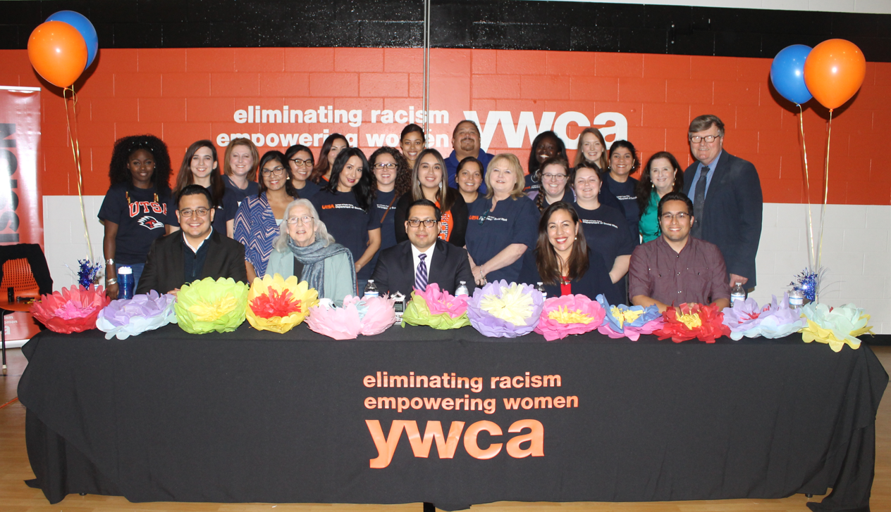

Keynotes & Major Stages
"Coming Out of the Shadows: Women Veterans and Homelessness after Military Service"
TEDx San Antonio

"Coming Out of the Shadows: Women Veterans and Homelessness after Military Service"
Keynote, "Where Research Meets the Road" symposium, Round Rock, TX
"Innovative Mental Health Solutions," panelist
Warrior and Family Symposium, Military Officers Association of America, Washington, D.C.
National Conferences
"Schools as a Gateway to Change for Children and Caregivers Experiencing Intimate Partner Violence"
National Association of Social Workers (NASW) annual conference — poster presentation (with Chanmugam & Harris)
"On the Road Again: The Journey of Students Experiencing Homelessness"
Association of Latin American Superintendents, national conference, San Antonio, TX
"On the Move: A Large Urban District's Frequent School Movers"
Association of Latin American Superintendents, national conference, San Antonio, TX
"Successive Generations of Domestic Violence"
American Public Health Association (APHA) annual conference — roundtable, public health social work section (with Harris & Chanmugam). Also poster presentation.
"Domestic Violence Survivors' Reasons for Acting and Not Acting"
APHA annual conference — oral presentation, family violence prevention caucus (Chanmugam, Harris & Casura)
"Childhood's Backstory to Domestic Violence"
Southwest Social Sciences Association (with Harris & Chanmugam)
"Childhood's Backstory: Community Domestic Violence Survey during COVID-19 Reveals Extensive Childhood Antecedents"
Cultural Inclusion Institute Conference (with Harris & Chanmugam). Also poster presentation.
"The Status of Women in San Antonio and Wage Equity"
National League of Cities, Women in Municipal Government (with Rogelio Sáenz, Ph.D.)
"Coming Out of the Shadows: Women Veterans and Homelessness after Military Service"
National Conference of State Women Veterans Coordinators, Omaha, NE
"Coming Out of the Shadows: Women Veterans and Homelessness after Military Service"
American Public Health Association (APHA) annual conference, Atlanta, GA
"Coming Out of the Shadows: Women Veterans and Homelessness after Military Service"
Military Social Work Conference, Austin, TX (with Richard Harris, Ph.D.)
"Coming Out of the Shadows: Women Veterans and Homelessness"
40th Annual NASW/Texas State Conference, Arlington, TX — poster presentation (with Harris)
"Where Advocacy and Social Media Intersect: Online Survey of Women Veterans about Homelessness"
Southwestern Social Science Association Annual Meeting, Las Vegas, NV (with Richard Harris, Ph.D.)
University & Invited Lectures
"Glimpses into Female Veteran Homelessness"
Harvard class reunion, invited speaker
Presentation on the Status of Women in San Antonio Report
American Association of University Women (AAUW)
"Childhood's Backstory to Domestic Violence"
UTSA Demography Writing Group
"Wage Equity for Latinos and the COVID Crunch"
Texas Latino Policy Symposium
Panel Interview, Domestic Violence Awareness Month
UT Health Science Center at San Antonio Title IX Office
"From Combat to Campus: Successful Reintegration Strategies for Returning Veterans"
University of Vermont, Blackboard Jungle annual diversity weekend for faculty, staff, and administrators. With interview on Vermont Public Radio.
"Glimpses into Combat Veterans and PTSD"
Harvard class reunion, invited speaker
Civic & Community Presentations
"Pay Her What She's Worth: A Conversation on Wage Equity"
DreamWeek, San Antonio — with Rogelio Sáenz, Ph.D. and Councilwoman Shirley Gonzales
"Surveys: When, Why and How"
Firecat Studio, San Antonio — with Caroline Jarrett, Ph.D. (UK)
"Transportation and Equity"
VIA Metropolitan Transit Board of Directors, San Antonio
"Can We Talk…about the Status of Women in San Antonio?" Moderator
Panel discussion with City Councilwomen, San Antonio
"How Do You Map Opportunity? Multiple Perspectives on Neighborhood Barriers and Amenities"
Mayor's Housing Summit, San Antonio (with Eaves & Walker)
"It's Not on My Map: A Panel Discussion on Equity Impacts in San Antonio's Most Vulnerable ZIP Codes" — Moderator
YWCA San Antonio

"Wage Equity"
United Way San Antonio Strong Individuals and Family Council
"Domestic Violence, Eviction and Homelessness"
San Antonio Housing Authority (SAHA), Rape Crisis Center, and San Antonio Regional Alliance for the Homeless (SARAH)
"Thinking about Data"
YWCA San Antonio Board Retreat (with Catie White)
"Lives Beyond the Numbers: San Antonio's 2018 Community Needs Assessment"
Multiple presentations to City of San Antonio Economic Development, Human Services, Community Action Advisory Board, SA2020's Family Lives commission, and others
"Selected Risk Factors by Feeder Pattern: Eviction, Domestic Violence, and Grandparents Raising Grandchildren"
SAISD Family and Student Support Services professional development day for school social workers (with M.E. Garza)
"Coming Out of the Shadows: Women Veterans and Homelessness after Military Service"
American Legion Auxiliary, Texas
"Pitch It! Pro Tips for Earning Big Media Coverage"
Firecat Studio, San Antonio (with Sandy Levy)
"Evictions by Census Tract in San Antonio/Bexar County (2016)"
UTSA College of Public Policy faculty and student showcase — poster presentation